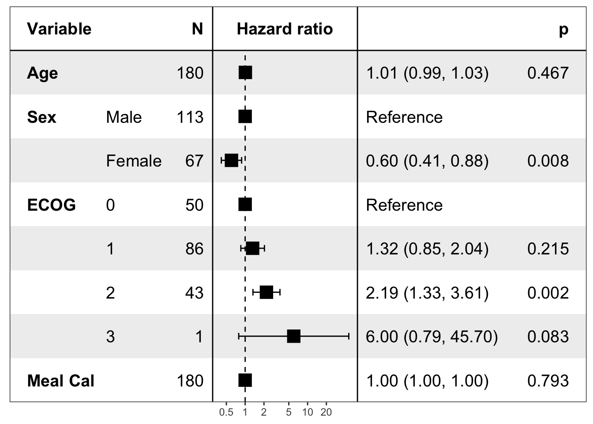
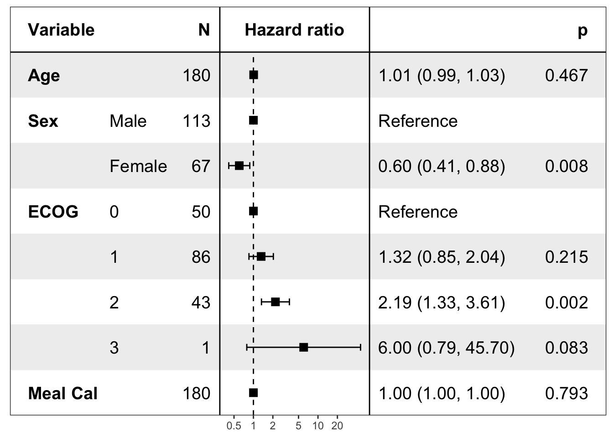
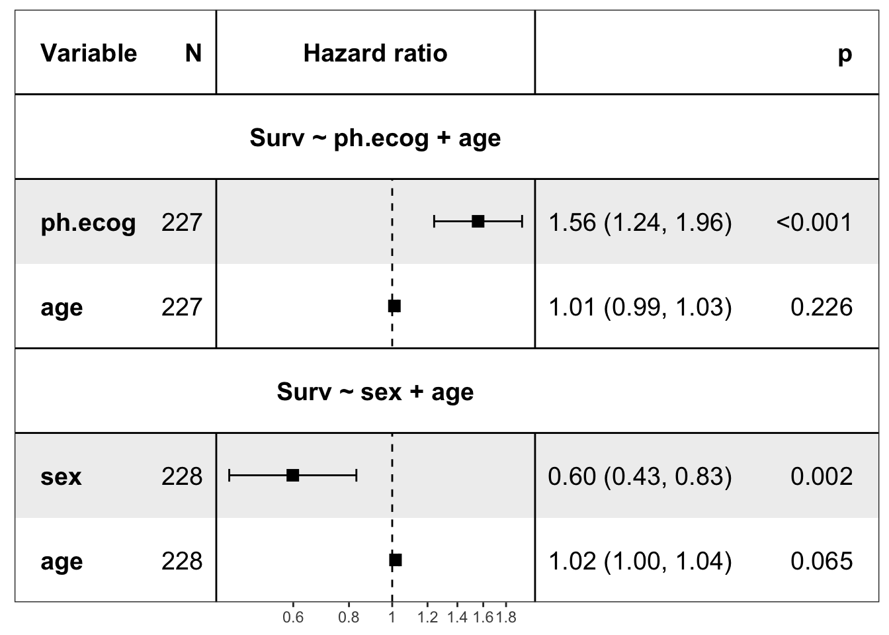

ezcox 森林图中点估计方块大小设定
王诗翔 · 2020-05-02
分类:
r
标签:
r
ezcox
forestplot
这篇文章与 https://github.com/ShixiangWang/MessageBoard/issues/69 与 https://github.com/ShixiangWang/ezcox/issues/12 相关。
之前开发的 ezcox 包提供了批量建模和展示森林图的功能，我自认为森林图要比 ggpubr 提供的 ggforest 好看。森林图的绘制实际是基于 forestmodel 的实现。
forestmodel 一个简单的使用示例如下：
library("forestmodel")
#> Loading required package: ggplot2
library("survival")
library("dplyr")
#>
#> Attaching package: 'dplyr'
#> The following objects are masked from 'package:stats':
#>
#> filter, lag
#> The following objects are masked from 'package:base':
#>
#> intersect, setdiff, setequal, union
pretty_lung <- lung %>%
transmute(time,
status,
Age = age,
Sex = factor(sex, labels = c("Male", "Female")),
ECOG = factor(lung$ph.ecog),
`Meal Cal` = meal.cal
)
print(forest_model(coxph(Surv(time, status) ~ ., pretty_lung)))
有读者说展示点估计的方块比较大，能否方便调节。我检查了下这个设置的底层代码，发现默认设定是 5，由于 forestmodel 包本身没有支持这个设定的修改，所以我只有改源码解决。
安装修改后的版本：
remotes::install_github("ShixiangWang/forestmodel")修改方式如下：
pretty_lung <- lung %>%
transmute(time,
status,
Age = age,
Sex = factor(sex, labels = c("Male", "Female")),
ECOG = factor(lung$ph.ecog),
`Meal Cal` = meal.cal
)
print(forest_model(coxph(Surv(time, status) ~ ., pretty_lung),
format_options = forestmodel::forest_model_format_options(point_size = 3)
))
这个修改也可以直接应用到 ezcox 的图形绘制中去。
不需要更新 ezcox
library(ezcox)
#> Welcome to 'ezcox' package!
#> =======================================================================
#> You are using ezcox version 0.7.0
#>
#> Github page : https://github.com/ShixiangWang/ezcox
#> Documentation: https://shixiangwang.github.io/ezcox/articles/ezcox.html
#>
#> Run citation("ezcox") to see how to cite 'ezcox'.
#> =======================================================================
#>
show_forest(lung,
covariates = c("sex", "ph.ecog"), controls = "age",
format_options = forestmodel::forest_model_format_options(point_size = 3)
)
#> => Processing variable sex
#> ==> Building Surv object...
#> ==> Building Cox model...
#> ==> Done.
#> => Processing variable ph.ecog
#> ==> Building Surv object...
#> ==> Building Cox model...
#> ==> Done.